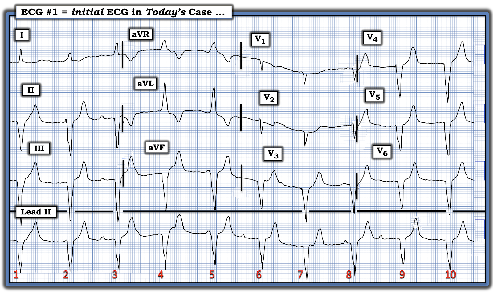
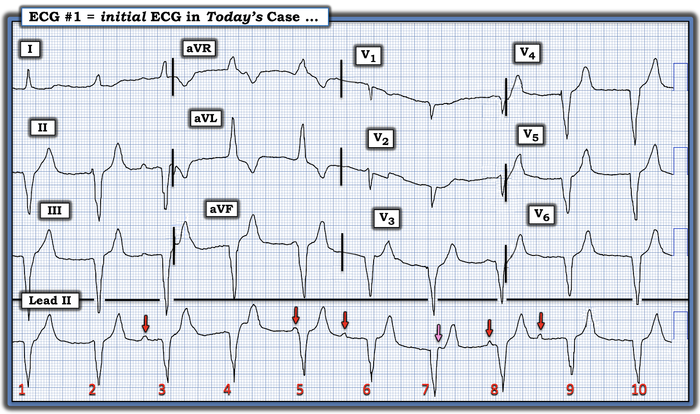
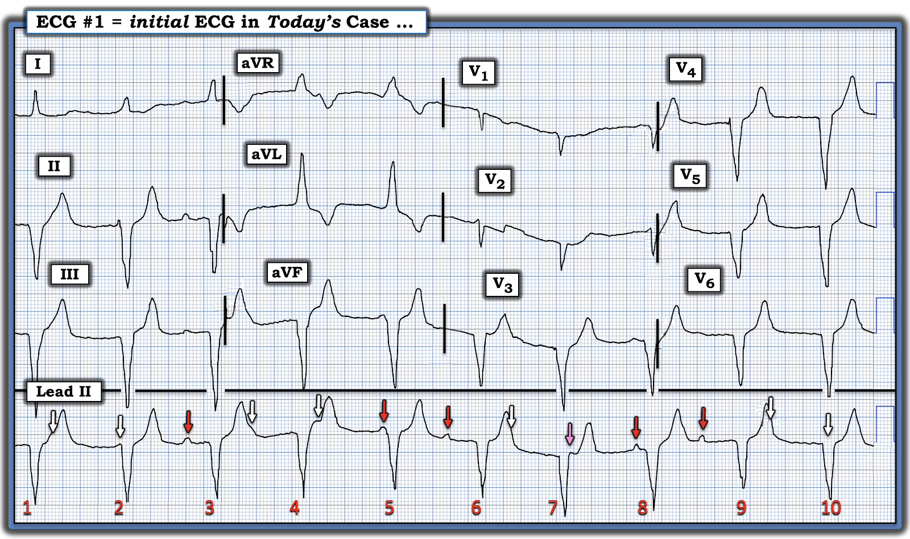

ECG Blog #516 — Bệnh nhân sau mổ ...
Điện tâm đồ ở Hình 1 được gửi đến tôi — với bệnh sử duy nhất được cung cấp là "điện tâm đồ này được ghi sau một ca phẫu thuật". Không rõ đó là loại phẫu thuật gì.
CÂU HỎI:
- BẠN sẽ đọc điện tâm đồ ở Hình 1 như thế nào?
- Bệnh sử này có giúp ích cho chẩn đoán không?


TRẢ LỜI:
Khi được đưa một điện tâm đồ 12 chuyển đạo kèm một dải nhịp chuyển đạo dài — tôi thích nhìn nhanh dải nhịp trước khi xem bản ghi 12 chuyển đạo. Trong vòng vài giây tiếp theo — tôi mong tìm ra được những điều sau:
- #1) Nhịp này có cần điều trị ngay lập tức không? (như có thể xảy ra nếu nhịp quá nhanh hoặc quá chậm).
- #2) NẾU bệnh nhân ổn định huyết động và nhịp không cần điều trị ngay — khi đó tôi mới nhìn qua phần còn lại của điện tâm đồ 12 chuyển đạo.
Về Đánh giá Nhịp — tôi ưa dùng Ps,Qs,3R (như đã mô tả trong ECG Blog #185) theo cách tiết kiệm thời gian. Tôi thích bắt đầu với thông số nào dễ đánh giá nhất trong 5 Thông số MẤU CHỐT.
- Phức bộ QRS ở Hình 1 rõ ràng là rộng (rõ ràng dài hơn nửa ô lớn).
- Nhịp thất gần như (nhưng không hoàn toàn) đều (Regular) — ở chỗ các khoảng R-R dao động giữa hơi dài hơn hoặc hơi ngắn hơn 5 ô lớn.
- Tần số (Rate) của nhịp là ~60/phút (300 ÷5 ~60/phút).
- Có một số sóng P! Dù vậy — chúng ta không thấy sóng P trên toàn bộ bản ghi.
- Những sóng P mà chúng ta thấy được dường như không liên quan (Related) với các phức bộ QRS lân cận (vì khoảng PR có vẻ thay đổi liên tục).
Nhận định nhanh BAN ĐẦU CỦA TÔI: Sự hiện diện của một nhịp QRS rộng khá đều — cùng với việc sóng P không liên quan với các phức bộ QRS lân cận gợi ý một mức độ blốc AV đáng kể (có thể là blốc AV độ 2 hoặc độ 3).
- Chúng ta chưa biết tình trạng huyết động của bệnh nhân này. Dù vậy — một nhịp QRS rộng với tần số ~60/phút (ngay cả khi đây là blốc AV độ 2 hoặc độ 3) — thường không cần điều trị ngay lập tức.
- ĐIỂM THEN CHỐT (PEARL) #1: Như đã nêu ở trên — phức bộ QRS rộng. Bất cứ khi nào phát hiện QRS rộng — chúng ta muốn xác định càng nhanh càng tốt VÌ SAO QRS lại rộng?
- QRS rộng có phải là hậu quả của một dạng blốc nhánh nào đó không?
- — HAY — Đây là một nhịp thất?
==============================
CÂU HỎI:
- Theo BẠN, vì sao QRS lại rộng ở Hình 1?
==============================
TRẢ LỜI:
Câu hỏi trên chỉ có một số ít câu trả lời khả dĩ. Các khả năng này bao gồm:
- #1) Có một nhịp trên thất kèm một dạng rối loạn dẫn truyền (do dẫn truyền lệch hướng hoặc blốc nhánh có sẵn từ trước). Như đã ôn lại trong ECG Blog #204 — có 3 dạng rối loạn dẫn truyền cơ bản ( = RBBB, LBBB và IVCD).
- #2) Có WPW.
- #3) Có một nhịp thất.
- #4) Có một dạng "ngộ độc" nào đó gây QRS rộng.
Về các câu trả lời khả dĩ này:
- Không có WPW — vì sóng P không được dẫn truyền, và không có sóng delta.
- Dẫn truyền lệch hướng thường gặp nhất khi tần số thất nhanh — mà tần số tim ở đây không nhanh.
- Hình thái QRS không giống bất kỳ dạng rối loạn dẫn truyền nào đã biết (tức là Không có QRS dương ở chuyển đạo V1, như sẽ thấy trong RBBB — và QRS về cơ bản âm hoàn toàn ở cả 3 chuyển đạo dưới và ở cả 6 chuyển đạo trước tim). Điều này gợi ý mạnh mẽ một nhịp thất.
==============================
Đến đây — tôi xem kỹ hơn hình thái QRST trên điện tâm đồ 12 chuyển đạo.
- CÂU HỎI: BẠN có nhận thấy sóng T nhọn không?
TRẢ LỜI:
- Sóng ST-T trông quá nhọn (nếu không muốn nói là nhọn hoắt) ở nhiều chuyển đạo (tức là ở các chuyển đạo II,III,aVF; và V3 đến V6). Kích thước của nhiều sóng T này có vẻ tăng không tương xứng so với kích thước sóng S ở các chuyển đạo này.
- Nhận định của tôi: Bệnh nhân này gần như chắc chắn bị Tăng kali máu đáng kể — đến mức tôi sẽ cho Calci tĩnh mạch theo kinh nghiệm, ngay cả trước khi biết nồng độ K+ huyết thanh.
==============================
Những điểm CHÍNH về CA hôm nay:
Tiếc là tôi không có thông tin chi tiết về diễn tiến của ca hôm nay. Tuy vậy, tôi cho rằng cần nêu ra một ví dụ mà trong đó việc dùng Calci tĩnh mạch theo kinh nghiệm là phù hợp ngay cả trước khi có kết quả xét nghiệm K+ huyết thanh.
- Phần bàn luận của tôi về một ca tương tự trong ECG Blog #275 ôn lại mô tả kinh điển trong sách giáo khoa về các thay đổi điện tâm đồ tuần tự theo mức độ tăng dần của tăng kali máu. Nhưng nhiều bệnh nhân không đọc sách giáo khoa — vì vậy có thể gặp bất kỳ trình tự thay đổi điện tâm đồ nào (kể cả ngừng tim trước khi xuất hiện sóng T nhọn và QRS rộng).
ĐIỂM THEN CHỐT (PEARL) #2:
Bệnh sử ngắn gọn được cung cấp (cụ thể là điện tâm đồ hôm nay được ghi ở một bệnh nhân sau mổ) — có liên quan, vì có nhiều nguyên nhân tiềm tàng gây tăng kali máu trong giai đoạn sau mổ (Ayach và cs. — Eur J Intern Med 26(2):106-111, 2015) - và - (Jung và cs. — Acute and Crit Care 33(4):271-275, 2018) - và - (Dixit và cs. — Ann Cardiac Anaesth 22(2):162-168, 2019). Các yếu tố thúc đẩy tiềm tàng gây tăng kali máu trong giai đoạn sau mổ có thể bao gồm:
- Tăng giải phóng K+ từ tế bào do tổn thương trong quá trình phẫu thuật.
- Giảm lượng nước tiểu/suy thận cấp.
- Giảm thể tích tuần hoàn (có thể đã có từ trước mổ — hoặc xuất hiện trong lúc mổ).
- Tải K+ ngoại sinh (tức là từ truyền máu).
- Tiêu cơ vân (do đặt tư thế bệnh nhân không đúng trong lúc mổ).
- Dùng các thuốc giữ K+ ngay trước hoặc trong lúc mổ.
- Nhiễm toan (thúc đẩy sự tái phân bố K+ từ khoang nội bào ra khoang ngoại bào).
ĐIỂM THEN CHỐT (PEARL) #3: Nhận diện nhanh Tăng kali máu là một trong những kỹ năng quan trọng nhất mà người làm cấp cứu cần thành thạo. Lý do rất đơn giản:
- i) Tăng kali máu có thể đe dọa tính mạng.
- ii) Có một biện pháp điều trị theo kinh nghiệm (tức là Calci tĩnh mạch) có thể cứu sống bệnh nhân — và đôi khi nên được dùng trước khi có xét nghiệm xác nhận tăng kali máu. Dùng Calci tĩnh mạch một cách thận trọng là an toàn — còn không điều trị kịp thời thì có nguy cơ mất bệnh nhân.
- iii) Không nhận ra tăng kali máu là nguyên nhân gây QRS rộng, rối loạn nhịp bất thường và/hoặc bất thường sóng ST-T — sẽ dẫn bạn vào con đường chẩn đoán sai có thể nghiêm trọng.
ĐIỂM THEN CHỐT (PEARL) #4: Những lưu ý khi dùng Calci tĩnh mạch:
- Calci tĩnh mạch tác dụng nhanh (tức là trong vòng 2-3 phút) nhờ tác dụng ổn định điện thế màng tế bào cơ tim, qua đó làm giảm tính kích thích của màng tế bào cơ tim do tăng kali máu gây ra (và nhờ đó bảo vệ chống lại rối loạn nhịp tim). LƯU Ý: Calci tĩnh mạch không làm dịch chuyển kali vào trong tế bào, và cũng không thúc đẩy thải trừ cation này.
- Có thể dùng hoặc Calci Clorid hoặc Calci Gluconat (10 mL tiêm tĩnh mạch trong 3-5 phút kèm theo dõi điện tâm đồ). LƯU Ý: Dạng clorid chứa lượng calci gấp 3 lần trong mỗi liều 10 mL (10 ml 10% CaCl = 6.8 mmol Ca++ so với 10 ml 10% CaGlu = 2.3 mmol Ca++).
- Calci tĩnh mạch nên được nhắc lại NẾU không thấy hiệu quả (tức là QRS hẹp lại trên điện tâm đồ) sau 5-10 phút. Có thể cần dùng nhiều dạng gluconat hơn (vì dạng này chứa ít calci hơn).
- Thời gian tác dụng của Calci tĩnh mạch chỉ khoảng ~30-60 phút — nhưng như vậy là quá đủ thời gian để các biện pháp điều trị khác phát huy tác dụng.
- CaGlu có thể dùng qua đường truyền tĩnh mạch ngoại vi. Vì CaCl dễ gây hoại tử mô hơn nếu thoát mạch — nên dùng đường truyền tĩnh mạch trung tâm (trừ khi bệnh nhân đang ngừng tim).
- Thường sẽ cần thêm các biện pháp điều trị khác (tức là Glucose/Insulin; Albuterol khí dung; Natri Bicarbonat — và trong các trường hợp kháng trị, lọc máu) — nhưng Calci tĩnh mạch là lựa chọn điều trị ban đầu cho tăng kali máu đe dọa tính mạng.
- LƯU Ý: Calci tĩnh mạch không được chỉ định để điều trị sóng T nhọn khi QRS hẹp và nhịp chấp nhận được — vì đây không phải là tình huống đe dọa tính mạng.
==============================
ĐIỂM THEN CHỐT (PEARL) #5: Đánh giá nhịp khi tăng kali máu nặng thường khó vì nhiều lý do (được tóm tắt dưới đây trong Hình 2):
- Khi K+ huyết thanh tăng lên — biên độ sóng P giảm. Cuối cùng — sóng P biến mất.
- Khi K+ huyết thanh tăng lên — QRS giãn rộng.
- Ngoài nhịp chậm — bất kỳ dạng blốc AV nào cũng có thể xuất hiện. Vì vậy — Hãy nghĩ đến tăng kali máu khi có bất kỳ nhịp chậm nào kèm QRS rộng (ngay cả khi không có sóng T nhọn).
- Các rối loạn nhịp tim xuất hiện cùng với tăng kali máu nặng thường "không tuân theo quy luật" — đến mức có thể không xác định được một chẩn đoán nhịp cụ thể ở bệnh nhân tăng kali máu nặng.
HÃY NGHĨ MỘT CHÚT
xem điện tâm đồ sẽ trông như thế nào NẾU bạn không thể thấy rõ sóng P (hoặc hoàn toàn không thấy sóng P) — và QRS rộng?
- TRẢ LỜI: Điện tâm đồ sẽ trông giống như có một nhịp thoát thất — hoặc — giống như nhịp là VT nếu tần số tim nhanh.
ĐIỂM THEN CHỐT (PEARL) #6: Như vừa nêu, khi tăng kali máu tiến triển — biên độ sóng P giảm dần cho đến khi cuối cùng sóng P biến mất.
- Điều thú vị là — trong những trường hợp này nút xoang thường vẫn có thể dẫn truyền xung điện xuống thất, dù không thấy sóng P nào trên điện tâm đồ. Đây được gọi là nhịp xoang-thất (sinoventricular rhythm).
ĐIỂM THEN CHỐT (PEARL) #7: Theo ý kiến của tôi, không đáng phí thời gian cố tìm ra chẩn đoán nhịp cụ thể của một nhịp chậm khi có tăng kali máu. Tôi từng dành hàng giờ cố làm việc này — nhưng sau nhiều năm như vậy, cuối cùng tôi nhận ra những điều sau:
- i) Rằng có thể không xác định được một chẩn đoán nhịp cụ thể khi có tăng kali máu đáng kể — và, ngay cả khi bạn chẩn đoán được, chẳng hạn Wenckebach — nhiều khả năng khi dòng dịch chuyển K+ nội/ngoại bào thay đổi, nhịp tim cũng sẽ sớm thay đổi theo; và,
- ii) Về mặt lâm sàng — chẩn đoán nhịp cụ thể là gì không quan trọng một khi bạn đã nhận ra tăng kali máu cần được điều trị ngay lập tức — vì thường trong vòng vài phút sau khi tiêm calci tĩnh mạch, nhịp "xấu" rất có thể sẽ "biến mất" (thường với sự tái lập nhịp xoang nhanh đến bất ngờ).
==============================
Còn Nhịp trong CA hôm nay thì sao?
Hãy quay lại điện tâm đồ hôm nay. Chúng ta đã xác định ở Hình 1 (tôi in lại dưới đây) — rằng nhịp khá (nhưng không hoàn toàn) đều, với tần số trung bình ~60/phút — có ít nhất một số sóng P, dù những sóng P này dường như không liên quan với các phức bộ QRS lân cận.
- Điểm MẤU CHỐT: Hình thái QRS ở Hình 1 không giống bất kỳ dạng rối loạn dẫn truyền nào đã biết (tức là QRS âm hoàn toàn trên cả 6 chuyển đạo trước tim gợi ý QRS rộng là một nhịp thất).
CÂU HỎI:
- Có sóng P nào khác đang ẩn trong Hình 1 không?
ĐIỂM THEN CHỐT (PEARL) #8: Cách TỐT NHẤT để tìm thêm các sóng P có thể bị ẩn một phần (hoặc hoàn toàn) — là tìm 2 sóng P chắc chắn trở lên đi liền nhau (tức là các mũi tên ĐỎ thứ 2 và thứ 3 — rồi thứ 4 và thứ 5 ở Hình 3).
- Đặt compa đo theo khoảng P-P được gợi ý bởi khoảng cách giữa 2 mũi tên ĐỎ liên tiếp.
- Lưu ý ở Hình 3 — sóng P ẩn một phần (mũi tên HỒNG) đi trước các sóng P mũi tên ĐỎ thứ 4 và thứ 5. 3 mũi tên màu cuối cùng này gợi ý khoảng P-P có thể có của một nhịp xoang nền khá (nhưng không hoàn toàn) đều.


Tiếp tục theo khoảng P-P được gợi ý bởi các mũi tên ĐỎ liên tiếp ở Hình 3 — tôi đã thêm các mũi tên TRẮNG ở Hình 4 để làm nổi bật những chỗ tôi nghi có thêm sóng P xoang đang ẩn.


LƯU Ý: Giả sử các mũi tên màu ở Hình 4 chỉ đúng vị trí của các sóng P xoang — thì có vẻ nhịp hôm nay nhiều khả năng là blốc AV hoàn toàn .
- Dù vậy, khi blốc AV thực sự "hoàn toàn" — nhịp thoát thất thường đều hơn so với những gì chúng ta thấy ở Hình 4. Phần lớn các trường hợp — các phức bộ QRS xuất hiện sớm hơn dự kiến là kết quả của việc có một phần dẫn truyền (do đó là blốc AV độ 2 chứ không phải độ 3).
- ĐIỀU CỐT LÕI: Tất cả những điều này đều không quan trọng về mặt lâm sàng! Đơn giản là không đáng phí thời gian cố phân biệt blốc AV độ 2 với độ 3 ở Hình 4 — vì các rối loạn nhịp thường "không tuân theo quy luật" khi có tăng kali máu đáng kể — và nhịp nhiều khả năng sẽ trở về bình thường trong vòng vài phút sau khi tiêm Calci tĩnh mạch.
==================================
Lời cảm ơn: Tôi xin cảm ơn Ahmed Marai, Safen Haider và Zahraa Ali (đến từ Iraq) — đã cho phép tôi sử dụng ca bệnh và các bản ghi này.
==================================
==================================
PHẦN BỔ SUNG (31/1/2026):
ECG Media PEARL #58 (8:30 phút Audio) — Ôn lại một số Điểm then chốt ít được biết đến giúp nhận diện Tăng kali máu trên điện tâm đồ.